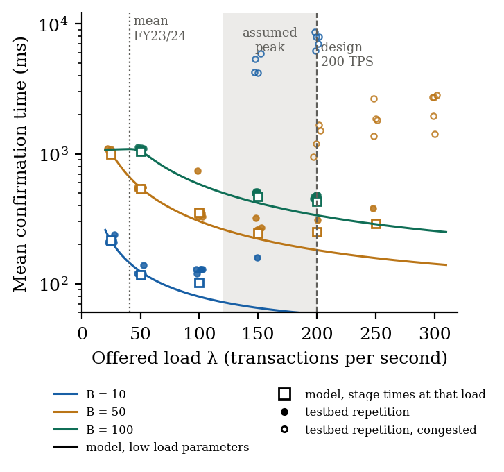

Confirmation time in a permissioned retail CBDC: a queueing model checked on a Hyperledger Fabric testbed

The problem
A retail central bank digital currency has to confirm payments quickly, and the delay has to be predictable. If the ledger is permissioned and run jointly by several institutions, every payment goes through several steps before it is final. A central bank planning such a system needs to know, before deployment, how long confirmation takes at a given load and which configuration keeps it short. Permissioned ledgers for a CBDC are rarely assessed this way.
I study this for Nepal. From the country's FY2023/24 payment volumes I derived a design load of 200 transactions per second.
Why a single queue is not enough
The simple answer is to treat the network as one server (M/M/1) or a pool of servers (M/M/c). Hyperledger Fabric does not work like that. A transaction is first endorsed by a quorum of institutions, then waits for a block to fill or for a timer to run out, then the block is replicated by Raft, and finally every peer validates and commits it. Each step adds delay in a different way. The endorsement step is a race between peers, and batching into blocks adds a delay that does not shrink as the servers get faster.
My approach
- Endorsement. Each peer has its own queue. If a transaction needs $q$ of $c$ institutions to endorse it, its endorsement delay is the $q$-th smallest of the peers' sojourn times, $$E = S_{(q:c)},$$ an order statistic. I give an upper bound for its mean under Fabric's standard dispatch rule and an approximation under hedged dispatch.
- Block formation. A block closes when it reaches $B$ transactions or when its timer expires. The mean formation delay under both limits has an exact expression.
- Replication and commitment. Raft replication and commitment at every peer are modelled as queues whose delay grows with load. The end-to-end confirmation time is the sum of the stages.
- Bursty traffic. I use matrix-analytic methods to handle arrivals that come in bursts (a Markovian arrival process) and service times that are not exponential (phase-type distributions). These are solved as quasi-birth-and-death processes. One result is that bursts do not change the mean block formation delay.
- Testbed. I built a five-institution Fabric network, measured the model's parameters on it, and compared its predictions with 230 five-minute measured rounds. The rounds vary block size, timer, endorsement threshold, workload, failures and surges.
Results so far
- In simulation, the end-to-end formula is within −0.6 to +5.7 percent, and each stage's expression within 9 percent.
- On the testbed, the model with parameters measured at low load predicts confirmation time within 7 percent up to 50 transactions per second. With stage times measured at each load, it is within 11 percent up to 200.
- The testbed also shows what the model misses. Small blocks make the network unstable far below its modelled capacity. So the planning procedure I propose ends with a measurement step on the real network.
- At the 200 TPS design load, blocks of 100 transactions with three of five institutions endorsing were stable in every trial and confirmed payments in $0.47 \pm 0.02$ s.
- Shared control costs about a third of a second compared with a single server of the same capacity, and almost all of that is batching.
What I am working on next
- Finishing the revised manuscript and submitting it to a new journal.
- Writing every matrix-analytic step into the paper itself (block matrices, the $R$ and $G$ computations, boundary equations and proofs), so a reader can reproduce each number without the code.